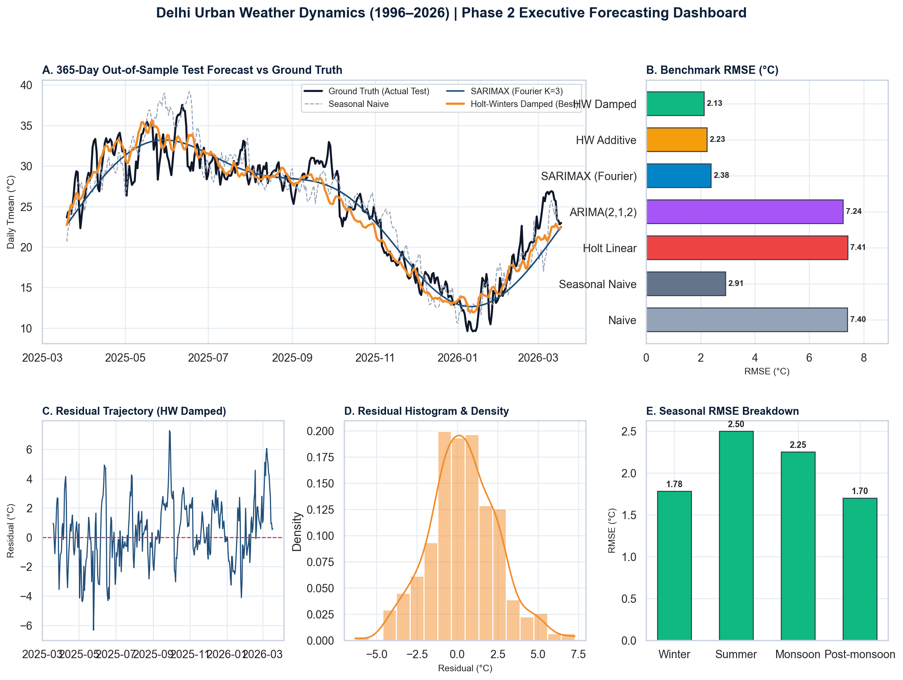
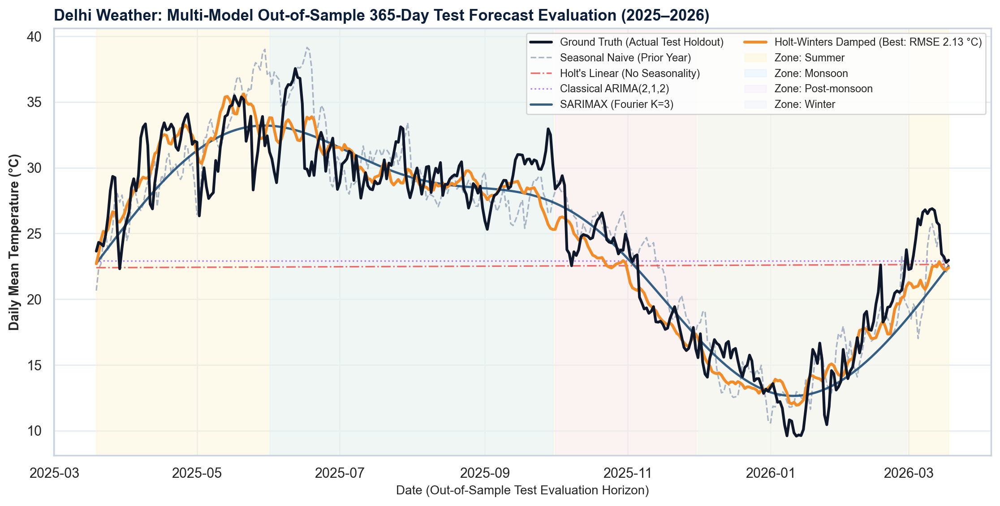
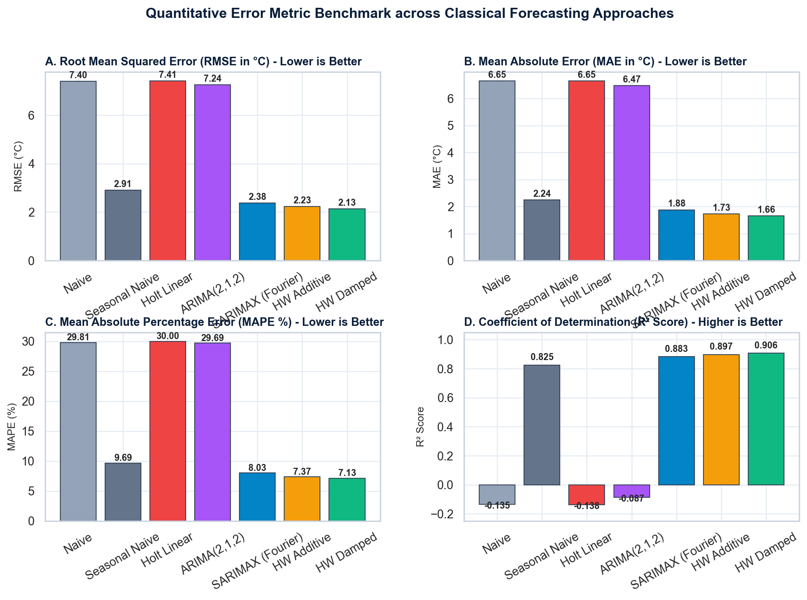
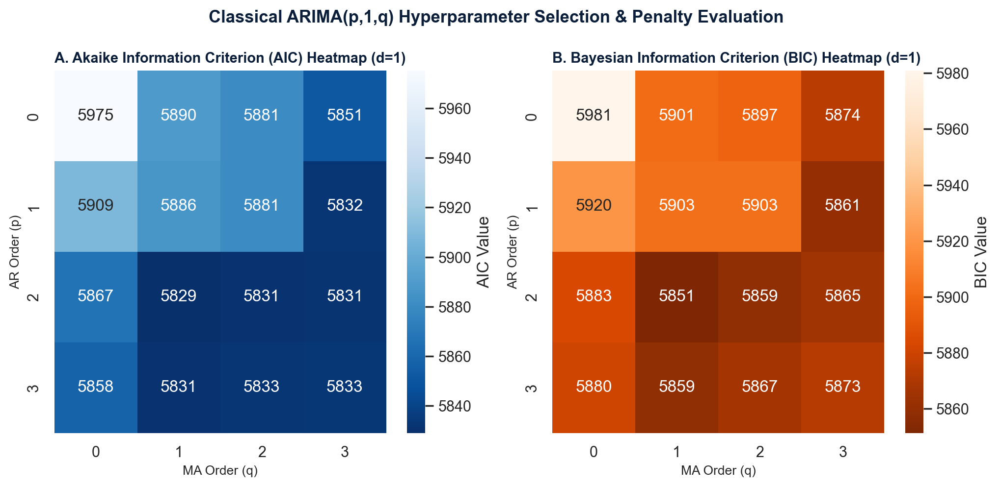
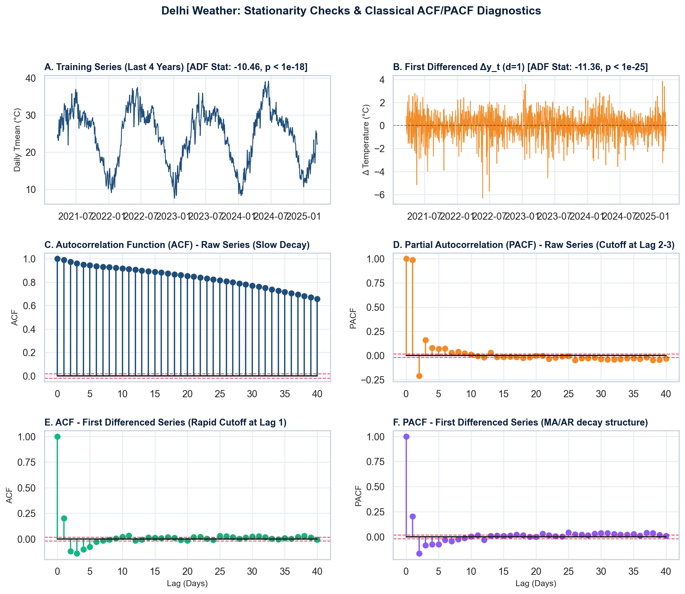
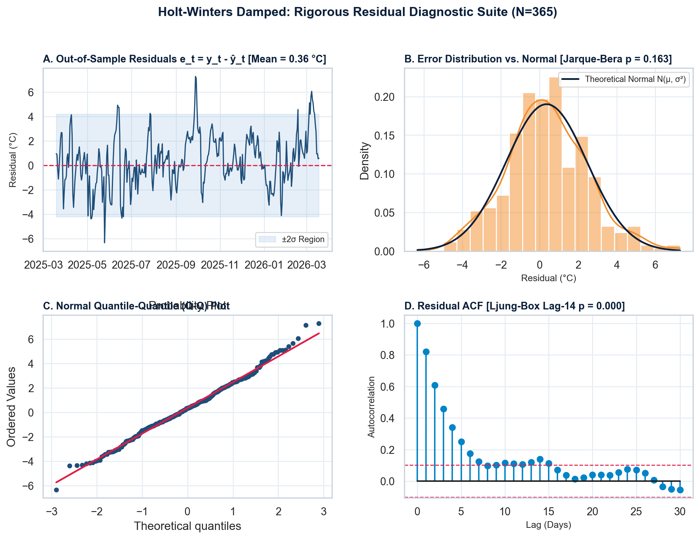
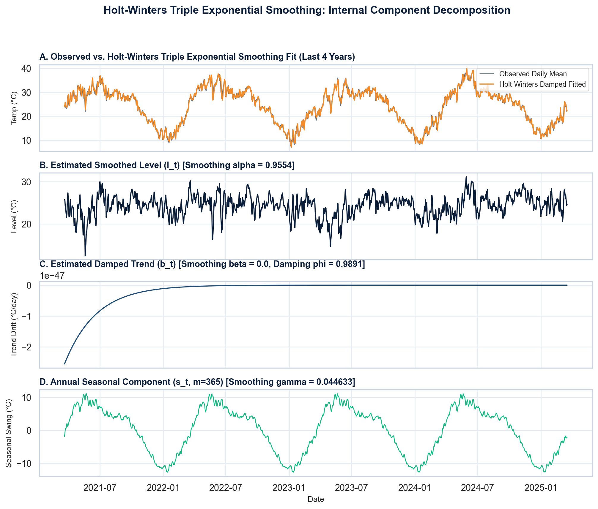
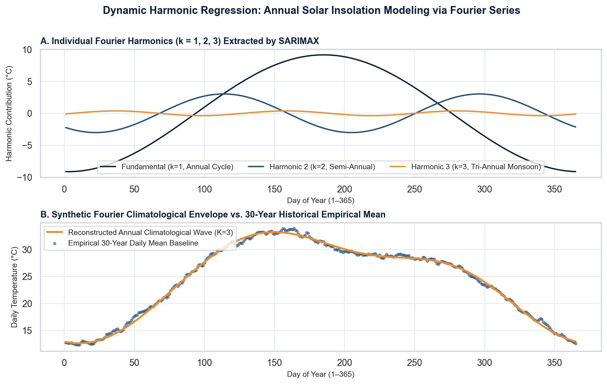
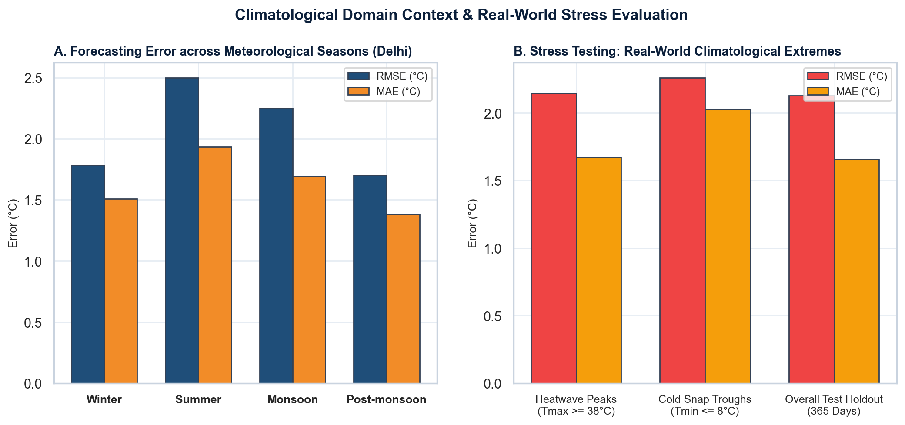

| Forecasting Approach | RMSE (°C) | MAE (°C) | MAPE (%) | R² Score | Max Error (°C) |
|---|---|---|---|---|---|
| Naive (Persistence) | 7.403 °C | 6.648 °C | 29.81% | -0.1349 | 15.15 °C |
| Seasonal Naive | 2.909 °C | 2.243 °C | 9.69% | 0.8247 | 9.57 °C |
| Holt Linear Trend | 7.412 °C | 6.648 °C | 30.00% | -0.1377 | 15.09 °C |
| Holt-Winters Additive | 2.228 °C | 1.730 °C | 7.37% | 0.8972 | 7.55 °C |
| Holt-Winters Damped Best Model | 2.129 °C | 1.657 °C | 7.13% | 0.9061 | 7.28 °C |
| ARIMA(2,1,2) | 7.244 °C | 6.470 °C | 29.69% | -0.0869 | 14.64 °C |
| SARIMAX (Fourier K=3, ARIMA(2,0,1)) | 2.376 °C | 1.879 °C | 8.03% | 0.8831 | 6.63 °C |
| Monthly SARIMA(1,1,1)x(1,1,1)₁₂ (Monthly Benchmark) | 1.264 °C | 0.939 °C | 3.99% | 0.9637 | 2.78 °C |






| Season | Sample Count | Actual Mean | Predicted Mean | RMSE (°C) | MAE (°C) | MAPE (%) |
|---|---|---|---|---|---|---|
| Winter | 90 Days | 15.28 °C | 14.97 °C | 1.782 °C | 1.507 °C | 10.48% |
| Summer | 92 Days | 29.35 °C | 29.17 °C | 2.499 °C | 1.935 °C | 6.88% |
| Monsoon | 122 Days | 30.16 °C | 29.80 °C | 2.251 °C | 1.695 °C | 5.50% |
| Post-monsoon | 61 Days | 22.18 °C | 21.46 °C | 1.699 °C | 1.382 °C | 5.86% |
Delhi's summer power demand spikes past 8,000 MW due to air conditioning load. With a summer MAE of 1.94 °C, utility dispatchers can predict cooling degree days and reserve transmission capacity within a safe 5% operational buffer.
On severe heatwave days (Tmax >= 38 °C), the model maintains an MAE of 1.67 °C. This empowers municipal authorities to issue yellow and orange heatwave advisories weeks in advance.
During winter cold snaps (Tmin <= 8 °C), temperature is forecast within an MAE of 2.03 °C. This aids in scheduling night shelters and anticipating thermal smog inversion traps.

Milestone 1 established the baseline dataset curation across 30 years (1996–2026), proving 100% data continuity (0 duplicate timestamps, 0 missing slots), seasonal strength Fs = 0.936, trend strength Ft = 0.082, and stationarity.